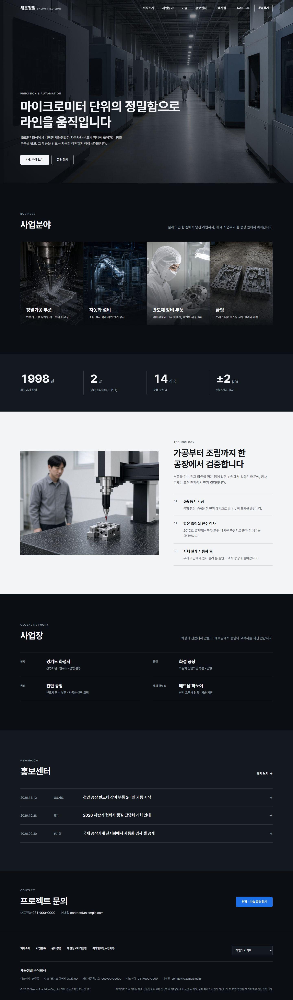
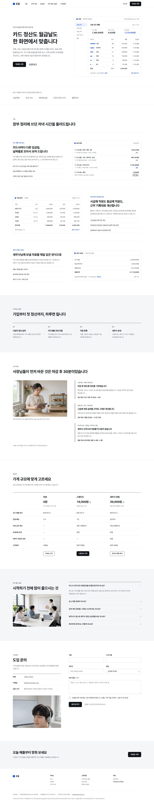
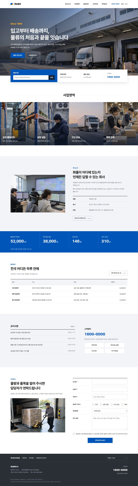
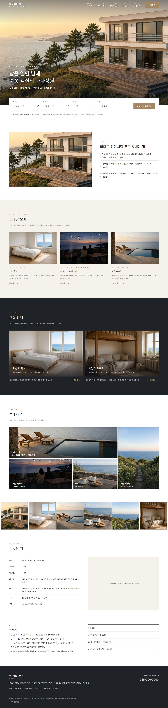
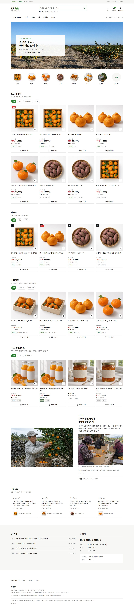
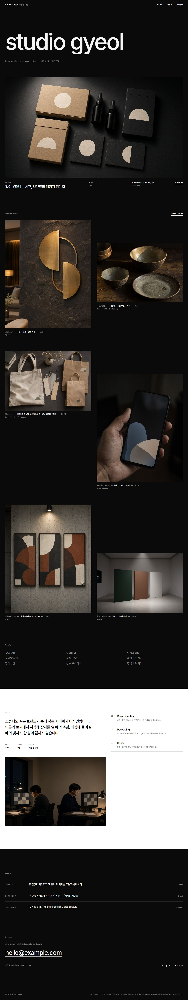

韓国と日本のサイト2,326件を実測して作ったUI RefinerのWebデザインテーマです。見本に登場する事業者、人物、数字、写真はすべて架空のものです。
日本のサイト65件を実測 · 顧客の写真が必要
エフェクト: スライド · スクロール表示 · エフェクトを見る
目立つバリエーションを見る
韓国のサイト38件を実測
エフェクト: スライド · 動画 · スクロール表示 · エフェクトを見る

韓国のサイト35件を実測 · 顧客の写真が必要
エフェクト: スライド · 動画 · エフェクトを見る

韓国のサイト50件を実測
エフェクト: スライド · 動画 · スクロール表示

韓国のサイト41件を実測
エフェクト: スライド · エフェクトを見る
日本のサイト68件を実測
エフェクト: スライド · スクロール表示

韓国のサイト43件を実測 · 顧客の写真が必要
日本のサイト52件を実測
韓国のサイト61件を実測
エフェクト: スライド
日本のサイト64件を実測

韓国のサイト60件を実測
日本のサイト57件を実測

韓国のサイト34件を実測 · 顧客の写真が必要
エフェクト: スライド · 動画
日本のサイト36件を実測